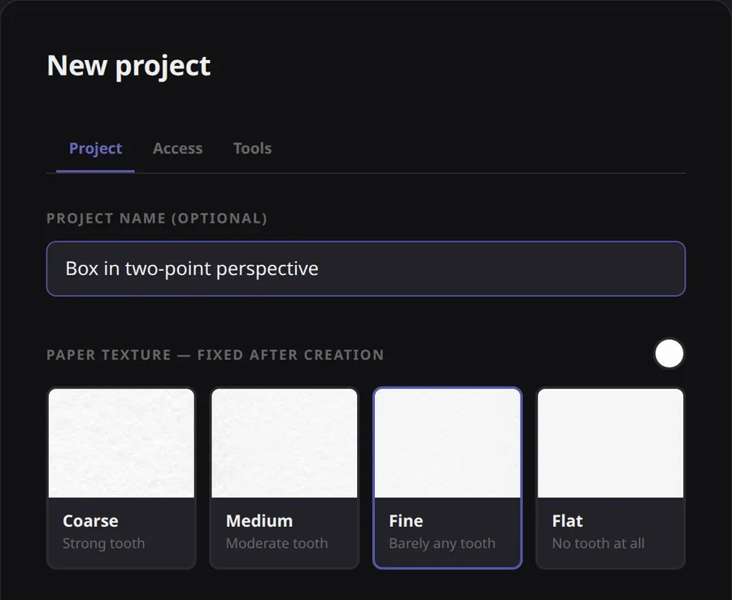
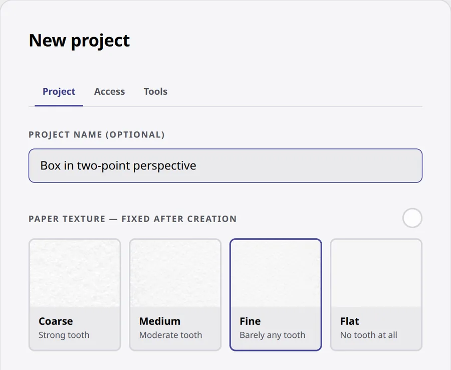
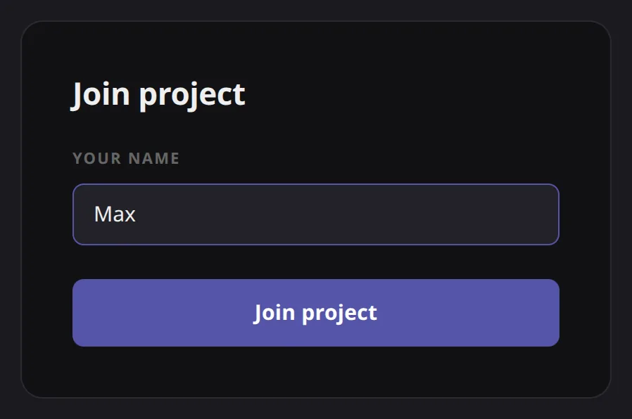
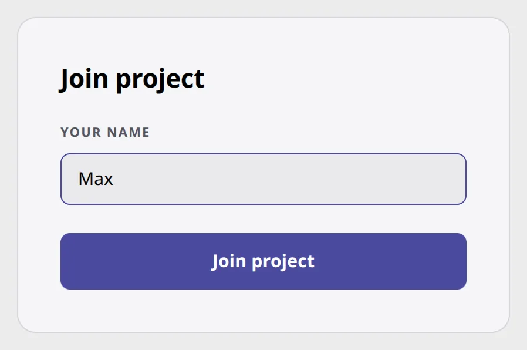
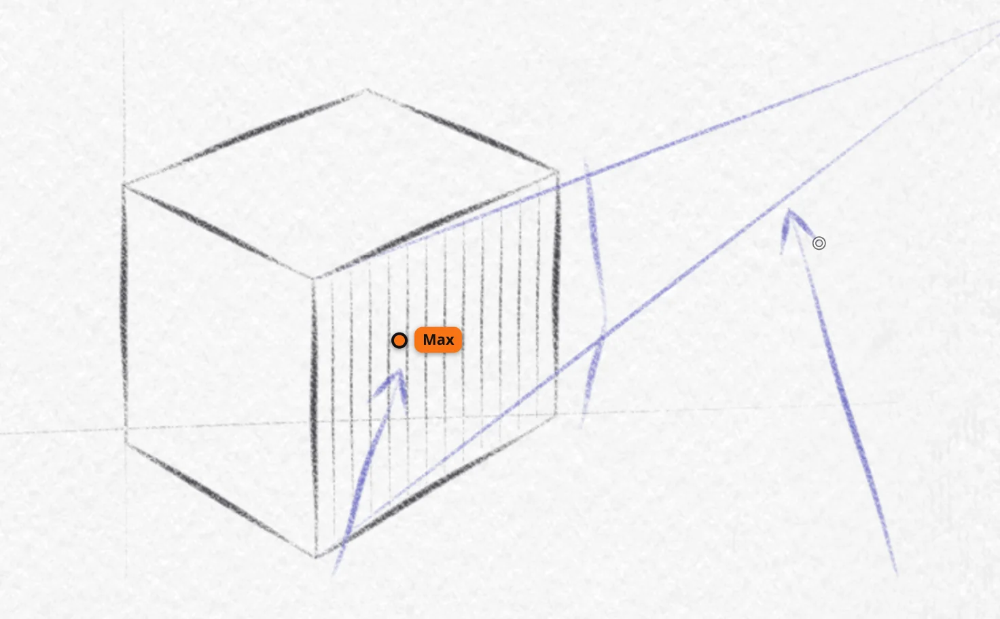
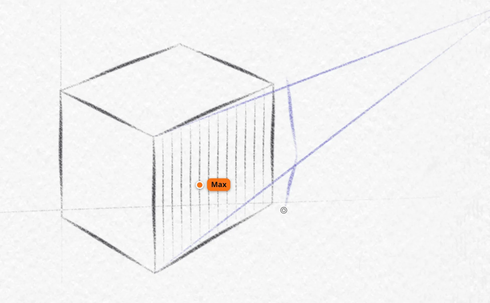

Teach on the drawing, not through screen sharing.
One sheet of paper for you and your student. You both draw on it at the same time, from anywhere, with pencils that answer to pressure and tilt.
The lesson recording is on its way. Until then, the quickest look is to open a room.
- Students join by linkNo account. No install.
- Any pen, any tabletiPad, Android, or a Wacom on a computer.
- The room staysThe drawing waits for the next lesson.
Try the paper yourself.
The real pencils on the real paper. Press harder, tilt the pen, layer the graphite — with a stylus if you have one, or a mouse.
In a lesson you also get a blending stump, a ruler, a proportion grid, reference photos, layers and each tool’s own settings.
How a lesson goes
Two steps to set up. Then you just draw — together.
-
Open a room
Name it, pick the paper and the sheet size. You get a link.


-
Send the link
Your student opens it in a browser, types a name, and is in.


Draw together
Each of you zooms and turns the sheet on your own screen, without moving it for the other.


Every stroke shows up as it's drawnWith each person's cursor and name.
Your correction, on its own layerHide it, and the student tries again.
The room stays.
After the lesson, your student keeps drawing on the same sheet.
-
Review the drawing, not a photo of it
Open the room and see exactly what was done.
-
Close it when it's done
A closed room stays as it was, for both of you.
-
Give the same task again
Copy a room to set it to another student.
Draw with the device you already use.
Keep your usual video call running alongside — Grafetto is the paper, not the camera.
- iPad with Apple Pencil
- Android tablets with a stylus
- Computers with a Wacom, XP-Pen or Huion
Try it on your next lesson.
Free while in early access.
Start a lesson